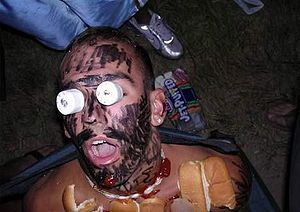
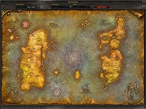
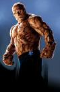
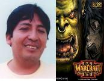
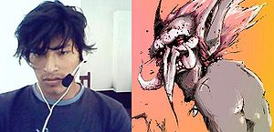
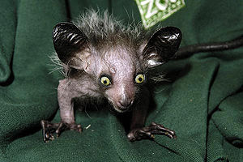

Warcraft
 De: La Frikipedia, la enciclopedia extremadamente seria.
De: La Frikipedia, la enciclopedia extremadamente seria.
De la serie Videojuegos:
Warcraft

| Desarrollado por:
|
Blizzard
|
| Distribuido por:
|
SGAE(Sociedad de Gamers Americanos Estupidos)
|
| Diseñado por:
|
Jefe de Limpieza de Blizzard
|
| Motor
|
V2-d y luego V3-d
|
| Género(s)
|
estrategia.. pero por supuesto estrategia de dominacion mundial
|
| Fecha de lanzamiento:
|
de hachas mayormente
|
| Modos de juego:
|
multijugador pero cada uno en su casa
|
| Requisitos:
|
ser feo, friki o ambos
|
| Disponible en:
|
Suburbia
|
| Formatos:
|
CD,DVD y disco de acetato
|
| Edades:
|
solo hombres de 0 a 120 años
|
| Puntuaciones:
|
10/10 ya domina a 10 millones de personas
|
busquemos Azeroth !
«vete a la mierda y no jodas»
~ jugador de warcraft: a su madre cuando lo interrumpe mientras juega
«Gloctar»
~ jugador de warcraft: saludando a un amigo
«me falta mana»
~ jugador de warcraft: al fallar en hacer algo
«Que la luz esté con vosotros»
~ jugador de warcraft: evitando ser robado por unos canis
«Lucho por la luz»
~ Arthas cada vez que lo seleccionas
«¿Hay algún problema?»
~ Mismo personaje cada vez que lo seleccionas
Warcraft es una serie de videojuegos que es igual a los otros: lleno de violencia y misiones difíciles.
Warcraft I
Un día el jefe de limpieza Richard A. Knaak se encontraba limpiando inodoros como de costumbre y recordo que no tenia como quitar la peste del baño , volvio entonces al sotano pero al bajar rodo por las escaleras se saco la mierda quedando deforme y todos los quimicos de limpieza cayeron sobre él esto produjo gases alucinogenos que lo llevaron a un profundo coma. En este sueño viajo al mundo de Azeroth del cual copio toda la historia se inspiro. al despertar fue rapidamente a contar su historia a todos por supuesto nadie le creyó... todos creyeron que el pobre richard se habia metido la mala hierba. pero richard no se rindio y cambio su version de pronto el era un gran escritor y habia inventado el mundo de azeroth ahora si sus amigos lo reconocian por su gran drogadicción imaginación y la empresa acepto sacar un juego usando la historia de richard asi salio a la venta warcraft I orc & Humans  Richard en una de sus visitas a azeroth
Warcraft II
Luego del exito de ventas de warcraft I la empresa le exigio a richard que continue su historia
pero como podia richard volver a sufrir esas alucinaciones intento una y otra vez drogarse inspirarse usando sus antiguos productos de limpieza pero sin frutos.. estaba ya perdiendo las esperanzas. un dia en el baño mientras se regocijaba de poder usar el baño y no tener que limpiarlo hizo su ultimo intento mezclo su botella de acido muriatico y kreso los combino dentro de su frasco de quitamanchas e inhalo profundamente pronto habia perdido el conocimiento una vez mas volvio a azeroth vio esta ves a los humanos navegando... al despertar tenia la cabeza dentro del inodoro en su intento de levantarse jalo la palanca y vio una imagen reveladora creo asi el mapa de azeroth y pronto salio a la venta warcraft II tides of darkness
 lo que vio Richard en el inodoro
 la Mole otro producto del excremento humano
Warcraft III reign of chaos & the frozen throne
Este proyecto le costo a richard 4 años de desarrollo esta vez blizzard lo apoyo en la compra de sus insumos terokal,alcohol isopropilico, cocaina, opio, marihuana, extasis y todo lo que ponga a volar, cursos de creatividad para que richar pudiera dar rienda suelta a su drogadicción imaginación y creara esta nueva saga del juego. frozen throne la expacion no estaba dentro de los planes de la empresa pero ya que richard se armo una grande con los restos de los "insumos" que le proporciono la empresa aprovecharon la ocasion.
La historia
Pues cuenta la leyenda de que luego de que el principe "me hartas" se fumara toa la yerba que habia en azeroth lo desterraron a las planicies heladas (por no rular los porros) en donde conoció al rey culo-frio que gobernaba el mundo desde su trono de hielo (y por eso tenía siempre el culo frio, joder que no se le ocurrio cambiar el material del trono?), o al menos eso decia el, el principe me hartas le propuso ayudarlo a re-conquistar azeroth a cambio de que le proporcionara nuevas drogas para fumar o inhalar, pero en el camino le agarró una sobredosis que lo fue jodiendo poco a poco hasta dejarlo con menos fuerza que un caracol reumático, entonces una cucarachota del tamaño de un manatí se ofreció a ayudarle a cambio de una empanadilla que llevaba en el bolsillo, me hartas aceptó, aunque de mala gana porque era la ultima empanadilla de atún que le quedaba pero ni modo.
En lo mientras los elfos nocturnos andaban agarrandose del moco con una especie de elfos-hombres-lagartija-cosa llamados los naga, que eran una especie de elfos mutantes cuyos padres habián practicado zoofilia con tiburones y ellos eran el resultado, lidereados por un tal "y me dan", estaban cabreados con las elfas porque ellas si estaban buenas y ellos no, les querian quitar el cuerpo para usarlo ellos (al estilo porrochimaru) pero las elfas que no eran nada pendejas las mandaron a hostias hasta un monte desolado donde no habia ni agua ni arboles ni oro ni na, ahí fue donde "y me dan" (illidan en elfico) se encontró con su antiguo señor sexual maestro quien le dijo que por que aun no le habia roto el culo al rey culo-frio, y-me-dan le dijo que primero se queria cepillar a una elfa pero que el tigre con el que ella practicaba la zoofilia no le habia dejado y que ademas le habia dejado unos arañazos bastante feos, su jefe le dijo que le daba un poco mas de plazo con tal de que lo dejara pasarse por la piedra conocer a un elfo raro llamado caleta-caletilla (principe kael-tas en elfico) que se le habia enrolado en el camino, el famoso principe es una especie de elfo-humano que ni es morado ni lanza flechas, se pone nerviosillo y se caga de miedo cada que y-me-dan entra en celo, lo acompaña tambien una bruja llamada leidi vach (lady vasgh en naga) que es una especie de cruza entre medusa y sirena, que es tan fria en la cama que hasta usa el hielo para descojonar a sus enemigos
La cosa acaba en que y-me-dan llega a donde está el rey culo-frio y le quiere partir el culo, pero la cucarachota con la que se alió me-hartas le hizo la tecnica de los "mil años de dolor" de mierdashi y acabó el con el culo partido y cagando leches, se espera que en el proximo viaje mistico a azeroth se de conclusion a la saga y se respondan muchas interrogantes como: "por que las elfas son moradas?" o "que coño les dan a los animales del juego para que sigan peleando con 7 flechas incrustadas?"
Razas
Pues basicamente eran cuatro, pero ahora son cinco, aunque los naga sean elfos-lagartija zoofilicos pero cuentan como raza, cada raza tiene sus propias guarerias características, así que comenzemos a describirlas
Putas Nocturnas Elfas nocturnas
Como son todas mujeres y no tiene casi hombres son todas lesbianas... y cuando vas a una ciudad elfa podes llegar a follar como...1000000000 veces al dia...
Y digo elfas porque todos los machos de esta raza son alguna cruza extraña de animal con elfo que dan algo de miedo, hay muchos elfos que puedes llamar a combatir para dominar el mundo, y son:
- Wisp: achichincle de los elfos, son una especie de pedo solidificado que brilla y puede volver a convertirse en pedo, afectando a todos los que estén en esa zona dejandolos sin maná
- Arquera: elfas con mas pechuga que punteria (y mira que casi nunca fallan) que están mas buenas que el pan, traen un arco que casi nunca usan ya que su arma principal es atraer a su enemigo a una trampa desnudandose y prometiendole sexo del duro, logicamente nunca les cumplen ya que nunca llegan vivos hasta ellas.
A veces cuando tiene tiempo de sobra y estan en la ciudad arman una fiesta ellas se suben a una tarima y se desnudan y se tiran al publico para q las folle.
Y cuando no estan en la ciudad se desnudan y van para alguna base horda para q las follen.
- Cazadora: lo mismo que la arquera pero estas hacen zoofilia con una pantera a la que siempre montan (bueno, a veces la pantera las monta a ellas), en vez de arco te avientan unos shuriken gigantes igualitos a los de ten ten de naruto
- Tirachinas, que diga tirasables: especie de ballesta medieval que usan los elfos para destruir edificios, avienta un shuriken mas grande que los de las cazadoras, el cual inexplicablemente puede romper la piedra y el acero
- Hipogrifo: pues como su nombre lo indica es un grifo con hipo, tira hostias contra todo lo que vuele pero es inutil contra todo lo que no vuele (o que aterrize), puede montar a una arquera, que diga, recoger a una arquera (creo que es lo mismo) para formar un jinete de hipogrifo
- Jinete de hipogrifo: pues es una elfa que se lo ha montado con un hipogrifo (se nota que no les cumplen a las elfas), como no le ven tan arriba tiene que espabilar y tirar flechazos contra los que vea en la tierra
- Druidas de la zarpa: cruza zoofilica de elfo con oso, son precisamente un oso que camina en dos patas fugado del circo y que si se pone en cuatro (no para lo que piensan) tira unas hostias de cuidado, peligroso pero lo controlas con una tarro con miel
- Driades: cruza entre una elfa, un caballo y un arbol, les crecen picos venenosos que luego te arrojan si se cabrean contigo, pasaron la materia de brujeria I en la academia elfica pero luego abandonaron y se quedaron con poca magia
- Gigantes de la montaña: una piedra gigante con ojos que camina a la velocidad del camote pero que si se cabrea agarra un arbol y suelta piñazos con el, muy peligrosos si dejas que se te acerquen, aunque un anciano con artritis reumatoide podría escapar de uno con facilidad
- Druidas de la garra: cruza de elfo con cuervo (coño habrá algún animal del bosque al que los elfos no se hayan cepillado todavia?), estos traen un baston con el que tiran unas hostias que dañan menos que una cerbatana de bolitas de papel pero te hacen algo parecido al rasengan que te hace dar vueltas en el aire un rato, aunque no te mata, se pueden convertir en cuervo un rato aunque nadie sabe para que (ni ellos mismos)
- Dragon faerico: iban a salir en pokemon pero a la hora de la hora los botaron del show porque no podian decir ni la primer silaba de su nombre, son una carajada entre libelula y pelicano que tira rayos a todo lo que tenga maná y aguantan las hostias como si fueran de acero
- Quimera: no, no son cruzas entre animales ni tampoco va a venir edward elrico a matarlas, son una especie de dragon de dos cabezas con acidez estomacal que escupe sobre tus edificios y si los alcanza te joden la pintura que es un lio, se recomienda huir cagando leches si ves uno ya que son tan corrientes que si te ven te dan toques
Y bueno, no nos podiamos olvidar de los heroes
- Guardian del bosque: igualito a la driada pero en macho, puede hacer que los arboles se muevan de donde están para practicar la botanicofilia (que pervertidos me salieron los elfos), sacar raices de la tierra para quien sabe que cosas, ponerse espinas en la picha para que no lo violen (como si alguien lo quisiera violar) y hace el curatodo no jutsu
- Cazador de demonios:está ciego así que nadie sabe como putas corre tan bien sin estamparse contra los arboles, te quema el culo, que diga el maná para que no le hagas tecnicas pervertidas, se quema el solo no sabemos para que, baila la macarena para evitar que le atines todas las hostias y tambien puede convertirse en un demonio que tira hostias como panes
- Sacerdotisa de luna: elfa buenorra montada en un tigre con el que practica la zoofilia, puede invocar un buho para tambien hacerle guarradas (coño, que variedad), lanza flechas incendiarias contra los laboratorios en donde hacen pruebas con animales, despide humo de mota que ayuda a que las arqueras apunten mejor y causa una lluvia de hostias, que diga de estrellas que le parte el culo a todo lo que toca
- Guardiana: feminista a mas no poder siempre trata de hacerles sado a los (pocos) machos de la raza elfica, puede lanzar kunais al estilo ten ten (joder no sera que ten ten es elfa?), teletransportarse a donde sea que alguien abra una botella de vino o una lata de cerveza, aventar un kunai
cagado envenenado que paraliza al enemigo con la peste e invocar a una cosa rara del mas alla que a su vez invoca mas cosas raras del mas alla que son invulnerables a todo y son las unicas que le aguantan la sesion completa de sado
Humanos
Pues deberian ser los normalitos del juego, pero no lo son, tienen poco cerebro y poco musculo, asi que dependen de la droga la magia para ganar, se dividen en
- Campesino: la clase oprimida, recogen el oro, la madera, construyen casas de mala calidad, siembran la maria y encima no les dan! y por si eso fuera poco los pueden convertir en milicia y mandarlos a pelear con una armadura de papel de aluminio y un cuchillo para pelar papas (sin filo)
- Soldado: el mas gilipollas de todos, lleva una espadita de juguete y un escudo que solo para flechazos de las elfas, van drogados la mayor parte del tiempo por lo que no les importa mucho si viven o mueren
- Fusilero: fugados del cuento de blanca nieves, son enanos con complejo que cargan un fusil del tamaño de penedector para compensarlo, siempre tiran a matar y son de cuidado si los haces enojar
- Caballero: tipo con cara de sargento mal pagado montado sobre un caballo y con un puñetero pirulí a modo de arma, si le pones el pie al caballo para que tropiece todo vale madres
- Sacerdote: ni viste de blanco ni trae agua bendita, y las hostias que da no son muy buenas, tiene una tecnica parecida al cura-casi-todo no jutsu de kanuto, es decir, que cura de todo menos lo que deberia de curar, sirven principalmente para tocar las pelotas
- Hechicera: elfa pechugona (coño, si todas las elfas son así ya mismo me estoy mudando al valle de los elfos) cruzada con humano que convierte a los enemigos en oveja para despues hacerles la zoofilia (que parece ser una caracteristica natural de los elfos)
- Deshace-hechizos: pues su nombre lo dice todo, deshacen los hechizos pervertidos y se los regresan al que los lanzó para que se muera con su propia perversion, son bastante inutiles para casi todo
- Jinete de grifo: pues como su nombre lo indica son unos enanos que montan grifos (realmente necesito especificar?) y te arrojan basura desde arriba, suelen ser molestos pero no peligrosos
- Jinete de dragonhawk: pues son unos elfos que montan una especie de aguila gigante y que traen una red para atraparte y llevarte a su guarida para
violarte interrogarte, tambien pueden echar pedos azules que no te dejan ver nada para que te mueras del asco (se cree que tiene algo que ver con la mierda azul o rasengan)
y tambien pueden fabricar una cantidad de trastos que bueno
- Demoledor: intento de tanque medieval a vapor que arroja el carbón contra los edificios, por lo que a menudo se queda sin combustible, tambien le lanza piedras con un tirachinas a los pajaros que haya arriba
- Maquina voladora: replica barata del helicoptero de da vinci que arroja mierda contra los que estén abajo y les escupe semillas de sandia a los que estén volando, suelen bajar si los atacas por la "retaguardia"
- Equipo mortero: son dos enanos que van cargando un mortero (en realidad deberia ser solo uno para abaratar costes de manutencion pero los enanos son vagos y no quieren cargar) para disparar contra todo aquel que haga chistes de blanca nieves, son lentos como una babosa y tardan en recargar cada tiro lo mismo que tu novia arreglandose
Tenemos a sus puñeteros sorprendentes heroes que hacen de todo menos algo util
- Archimago: viejito montado en un caballo que hace la danza de la lluvia para que caiga algo de agua en un sitio muy chico, tambien puede invocar un clon de agua (aprendio esta tecnica al ingerir una zamburguesa) y fuma maria para recuperar mana mas rapido, y como fuma en pipa y la presta a sus soldados pues ellos tambien recuperan maná mas rapido, tiene suficiente dinero para pagar el taxi para el y todos sus soldados hasta donde a el le de la gana
- Rey de la montaña: su habilidad consiste en recargarse en una cerca de madera con una cerveza en la mano y hacer que el tiempo pase muy rapido, momento ese es otro rey de la montaña, este es un hijo de blancanieves con trencitas en el bigote (se cree que es gay) que te avienta un martillo al estilo winry rockbell, tambien se echa un pedo de poder que marea a todos los que estén cerca con la peste y da hostias con otro martillo, se puede transformar en el avatar, maestro de los cuatro elementos que... momento, eso es otro articulo
- Paladín: para variar otro que trae martillo (se nota que todos tienen complejo de carpintero), este puede curarte con una lucecita rara que en realidad es la luz que ves cuando te da de sus "polvitos magicos", tambien puede hacerse invulnerable
fumandose un porro con polvos de angel, crack, peyote, hongos magicos, pildoras del soldado, viagra, hachis y demás por pura fuerza de voluntad y se pone a rezar en pleno campo de batalla para que sus soldados tengan devocion y les entren menos duras las piñas, invoca una palomita que trae de regreso a 6 soldados suyos que se hayan cabreado y lo hayan abandonado por gilipollas
- Elfo sanguinario: Principe elfo raro que no sabe tirar flechas y se pone nerviosillo, avienta bombas molotov contra laboratorios cientificos, te hace "desaparecer" escupiendote humo de porro a la cara (que está tan fuerte que te sientes en otro mundo), te chupa la vida, que diga el maná y trae consigo a un pajarraco que se quema solito y solo le queda un huevo, curiosamente renace de este huevo
Muertos vivientes
Esta raza se explica sola, son unos puñeteros cadaveres que se aburrieron de estar todo el dia metidos en la tierra y decidieron salir a tocar los cojones un rato, tienen algunas unidades puñeteras que son:
- Acolito: enfermos de lepra por tanto practicar la necrofilia hacen hechizos baratos para traer casuchas viejas al estilo mansion embrujada de stupi doo
- Necrofilico, que diga necrofago: especie de marmota mal formada que tiene atraccion sexual y culinaria por los cadaveres, es decir, le gusta darles por el culo
- Guardian de la cripta: hormiga hiper desarrollada que ademas aprendió a hablar, escupe unos bichos que te muerden los cojones y una substancia pegajosa y verde que te pega al piso (preferimos no saber que es)
- Gargola: mas obvio no puede ser, es un pajarraco de piedra que echa cagadas de piedra que son mas peligrosas que la mierda de paloma, tambien le da hostias a todos los que vuelen igual que el
- Negro amante, que diga, nigromante: de negro no tiene nada porque está mas palido que una vela y de amante solo un poco con los cadaveres, estos tios son de cuidado ya que le dan tan duro a los cadaveres que les sacan el esqueleto y al rato ahi anda el esqueleto solito repartiendo hostias, tambien te pueden lisiar para despues ganarte el lugar de minusvalidos
- Banshee: parecidas a la llorona, son unos espiritus morados bastante feos que te echan maldiciones para que te cabrees y no atines los golpes, tambien te pueden poseer estilo "posesion infernal" para que hagas guarradas necrofilicas, lo quieras o no
- Abominacion: primos hermanos de frankenstein son unas cosas feas que parecen camion de carne y visceras de rastro clandestino y que curiosamente traen un cuchillo de carnicero, apestan mucho para que no te les acerques y encima de todo te quieren comer
- Carro de despojos: la definicion de carroñero por excelencia, trae cadaveres, recoge cadaveres, puede crear cadaveres y te ataca lanzandote cadaveres, son como la cruz verde pero con menos salubridad (si, es posible)
- Estatua de obsidiana: son el deposito de droga para los muertos vivientes, los cura a base de polvillos magicos y peyote y les rellena el maná con humo de maria, adentro traen un pajaro bastante feo que sale si lo haces enojar
- Destructor: son el pajaro feo que vive adentro de las estatuas de obsidiana, escupen vomito negro sobre ti y si no tienes cuidado te la comen (la magia)
- Wyrm de hielo: dragon feo hecho de huesos con complejo de impotencia, son tan frigidos que cada que abren la boca echan hielo, son utiles si estás preparando cubatas, de otro modo son bastante odiosos, los puedes eliminar subiendole a la calefaccion
y bueno, sus heroes no podian ser menos guarros:
- Caballero de la muerte: ni es un noble ni está muerto, es un puñetero humano emo montado sobre un caballo huesudo que carga una hoja de afeitar gigante, te avienta el ultimo disco de my chemical romance que solo cura a otros emos pero a ti te jode la vida, tambien corta las venas a otro emo para sentirse mejor el y el solo estar cerca de el te baja la moral a ti y se la sube a su puñetera banda de emos, pero recuerda que es emo, un par de hostias bastaran
- Rey lich: tampoco es noble y tiene ciertas tendencias emo, te avienta hielos que le saca a su cubata para que te resbales y te caigas, corta a otro emo para recuperar maná y le pone a cualquier unidad emo una camiseta 3 veces mas chica de lo normal para que no le puedas pegar tan duro, ademas tiene su ataque de la rosita marchita que vuelve emo todo lo que toque en un radio de 10 metros, se recomienda acabarlo lo mas rapido posible
- Señor del terror: hijo perdido del conde patula es de los pocos que se salvan de ser emos, te avienta a sus hijos (una horda de murcielagos hambrientos) para que te la chupen (la sangre), tambien te cuenta una historia de miedo que te pone a dormir y su presencia hace que todos te la quieran chupar (nuevamente, la sangre) asi que en cada hostia que te den ellos se recuperan un poquito, puede llamar a un monton de piedras pegadas con super glu verde (si la super glu verde es lo que pensaste)que ademas se mueven para que pelee por el
- Señor de la cripta: cucaracha gigante encontrada en las alcantarillas de la nueva nueva york, puede llamar cucarachas mas chiquitas para que lo ayuden, picarte por detras para "empalarte" (pensad todo lo mal que querais) y le salen picos para que no la puedas mandar a visitar al doctor patita (pisarla), ademas invoca un enjambre de langostas para que te coman hasta los calcetines y te dejen desnudo, luego te matan y violan tu cadaver. Tambien se dice que se dice que este poder lo aprendio viendo la pelicula de la momia
Orcos
Son unas creaturas verdes y colmilludas, ademas de bastante feas, tienen mas musculo que un atlas de anatomía y menos cerebro que peter griffin, pelean mayormente con hachas, lanzas y pedazos de madera, son todos casi iguales pero aun asi hacen distinciones (son un poco racistas):
- Peón: no saben jugar ajedrez pero si saben construir cabañas con estacas puntiagudas, te arrojan estacas puntiagudas desde su casa y sacan mas estacas puntiagudas de los arboles (no tienen cerebro para mucho)
- Grunt: parecido al increible hombre verde pero con mas colmillos, te sueltan unas hostias de cuidado con un hacha y ademas de todo hablan
- Troll arranca-cabezas: tiene diplomado en cirugia de cabeza comprado en tepito, te arroja estacas puntiagudas (se cree que tiene algun parentezco con los peones) y para sorpresa de todos, es azul (aunque tambien es colmilludo)
- Gruntapulta: especie de catapulta medieval que arroja boñigas de orco encendidas, lenta como la justicia y ademas arroja humo al ambiente, por lo que greenpeace está tramitando su prohibición
- Jinete de lobo: realmente hay que explicar estos? pues es un grunt que se encontro por ahi a una loba y se puso a hacerle la zoofilia y ahora la monta todo el tiempo, te atrapan con una red para hacer trio contigo
- Bestia kodo: rinoceronte mutante que se come a tus soldados, lo monta (si, ya saben para que) un troll bastante feo que arroja hachas (para variar)
- Jinete de viento: estos grunt se encontraron una especie de dragon-lagartija extraño y... ya saben para que lo agarraron, te avientan estacas puntiagudas (que original) desde arriba y el dragon se caga en ti, caen con tres pedradas de un tirachinas
- Curandero: son los medicos brujos de la tribu, invocan un ojo picado en un palito que segun ellos les permite ver el futuro, un pikachu tambien picado en un palito que le da toques a todo lo que se acerca y un mechero que quema peyote para curar a tus soldados (o eso dicen ellos)
- Chamán: se quedó con la piel de loba luego de que ya no le servia para la zoofilia y se metió a la academia de magia orca, te puede purgar para que no salgas del baño en dos dias (parecido a la maldicion de moctezuma pero no es mortal), hacerte corriente para que electrocutes a los demas y te da anfetaminas para que des hostias como panes
- Espiritu caminante: estos son el fantasma de una vaca que se comieron los orcos y que ahora anda por ahi tocando los cojones, pueden revivir a las vacas que se encuentren en el camino para que luchen por ti (funciona mejor si son vacas locas) y unir a tus unidades en trenecito
- Tauren: vacas locas mutantes decididas a dominar el mundo y quitar a las tortugas ninja del aire (no hay espacio en este pueblo para dos razas de animales mutantes), te golpean con un pedazo de madera y curiosamente no te dan cornadas (ademas de feos, gilipollas), muy bueno para hacer bisteces y venderlos en un rastro clandestino
y claro, no podiamos olvidar a sus heroes:
- Jefe tauren: el lider de todas las vacas locas mutantes (algo asi como el maestro splinter, pero en vez de rata es toro), este es menos gilipollas que sus compañeros y trae un hacha para pelear, puede orinarse en linea recta matando de asco a todos los que toque, se echa un pedo de poder parecido al del rey de la montaña pero este no marea sino que paraliza (que comerá) y además les da substancias mutagenicas a sus soldados para que caminen mas rapido (a pesar de que él mismo camina como si estuviera rozado de la colina), si lo matan resucita sin necesidad de puñeteras vacas-chamanes (como todo buen animal mutante)
- Vidente: pues este es un grunt de esos zoofilicos que montan lobas pero este ademas se coló en la clase de magia y ahora insiste en que puede ver el futuro (en realidad inhaló demasiado humo de marihuana y peyote), puede precisamente, ver hacia algun lugar y decirte que hay ahí (en realidad busca nuevas plantas alucinógeneas), tambien se metió un cable de corriente por el culo y ahora arroja relampagos (copia barata del chichidori de mierdashi), tambien invoca dos lobas mas para hacerles la zoofilia (si estos orcos no tienen llenadera) y se echa un pedo tal que provoca un terremoto (la comida orca no es muy buena para el estomago)
- Maestro de las espadas: un orco feo y colmilludo con una katana, se mete anfetaminas para dar hostias con mas ganas, se puede duplicar a si mismo para ser hasta 4 veces mas insoportable, se cubre en humo de porro para ser invisible y si se cabrea hace el hostias como panes no jutsu de hinata pero en version katana
- Cazador de sombras: troll feo, flaco, colmilludo y ademas azul (se cree que es pariente de los pitufos), invoca serpientes al estilo porrochimaru que te escupen algo (no se sabe que es y realmente no kieres saber que es pero algo te escupen), cura a los demas con maria (a lo mejor por eso es azul), te convierte en un animal al azar para las practicas zoofilicas de la tribu y se pone a bailar la macarena atrayendo todas las hostias hacia el (ademas de todo le va el sado)
Plan de dominio mundial
Blizzard se dio cuenta que con su juego no solo podian hacer dinero si no tambien esclavizar a los humanos naciendo asi el plan de dominio mundial con warcraft.. un estudio realizado por blizzard determino que la mayoria de sus jugadores estaban tan frustrados con sus vidas que preferirian ser cualquier otra cosa menos ellos, muchos jugadores cambiaban su aspecto fisico y mataban su intelecto en pos de una apariencia mas similar a un orco o a un troll del juego.. esto les dio una idea hagamos el juego en 3d demosle alos jugadores mas razas a las que emular luego de que el jugador se autosaboteara en un intento futil por no ser él quedaria tan o mas horrible de lo que era y ninguna hembra se aparearia con el.De esta forma se diezmaria la población mundial y solo quedarian las hembras para ellos dominando asi el mundo. Muy aparte podrian esclavizar a sus jugadores con la esperanza de sexo como recompensa para llevar a cabo sus malignos planes.
 jugador en proceso de orcquificación
 jugador en proceso de trollificación
Actualmente
El plan de blizzard por conquistar el mundo es un plan progresivoy aun sigue ejecutandose con nuevas maneras de atrapar incautos conseguir jugadores con nuevos versiones como World of Warcraft y sus distintas expanciones.
Sabias que
- ...Richard A. Knaak escribe libros de fantasia porque a pesar de ser el creador de warcraft blizzard le paga una miseria
- ...blizzard se llama asi porque las blizzards o ventiscas son la mayor causa de muerte de su personal
- ...el mapa de azeroth se baso en un extreñimiento de Richard
- ...Ese mapa se llamó así porque cuando Richard andaba estreñido, al pujar hacía un sonido que hace rot! rot! puurrggghhh, por lo que lo se llamó "Hacerot", que luego cambió a "Azeroth"
- ...la mole es producto de otro extreñimiento
- ...el excremento es una gran fuente de inspiracion humana
- ...un Aye aye es el mejor jugador de warcraft de Madagascar
- ...probablemente Tu juegues al warcraft
- ...el ratoncito perez no existe?
- ...definitivamente el Aye aye juega mejor que tu
- ...el Aye aye violo a IP anónima mientras leia este artículo
- ...y tambien al Mexicano que hizo este articulo, y le gusto!!
 el mejor jugador de madagascar
|
|
 Shooter Shooter
 Terror Terror
 Velocidad Velocidad
 Rol Rol
 Estrategia Estrategia
 Aventuras Aventuras
 Fight! Fight!
 Clásicos Clásicos
 Deportivos Deportivos
 Aventura gráfica Aventura gráfica
 Novela visual Novela visual
 Personajes de videojuegos Personajes de videojuegos
|
Autor(es):
- Krusher
- Frikiman
- Tsushinoko
- Alex2610
- Pyrokar
- Z
- Zulhen
- Frikih
- Grinkoshadow
- Rada
Frikipedia 2005-2016, Licencia
GFDL 1.2 - Extraído por FrikiLeaks